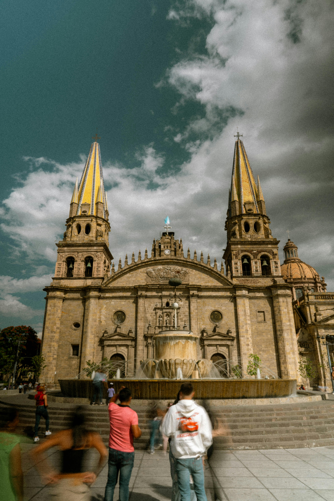

Cricieth, Gales
 Artistas
Artistas
Steffan Warren, editor jefe
Kseniya Glagoleva, gerente de proyectos
Las ruinas medievales del castillo de Cricieth dominan la ciudad desde una roca que extiende sobre el mar. Se cree que fue construido por Llewelyn el Grande en el S. XIII. 800 años después, la autodenominada Perla de Gales en las costas de Snowdonia, se ha convertido en un popular destino turístico durante los meses de verano.
A pocos pasos de camino al castillo, puedes disfrutar de los mejores helados del mundo en Cadwalader's, cuyo ingrediente secreto se rumorea que son algas marinas de la localidad. Otra cosa por la que es famosa Cricieth es por haber ganado el premio *Gales en flor* durante cinco años seguidos por sus espectaculares muestras florales alrededor de la ciudad. También vio nacer a David Lloyd George, el único galés que ha sido Primer Ministro del Reino Unido.
Compra esta obra como NFT
Berea, EE. UU.
.png) Artista
Artista
Travis Turner, autor y editor
Berea es una pequeña ciudad ubicada en la parte central de Kentucky. La ciudad está rodeada por hermosos bosques y campos. Es conocida como la capital de la artesanía del estado, y sus visitantes hallarán infinitas posibilidades para ir de compras: tiendas de joyas, velas y artículos de madera artesanales; galerías, talleres de vidrio y más. La ciudad celebra un festival anual que rinde tributo al "spoonbread", un platillo local hecho de pan de maíz y que se sirve con una cuchara de madera.
Aunque, probablemente es mejor conocida por su universidad. El Berea College fue fundado en 1855 y fue la primera universidad sureña integrada racialmente, así como la primera en ser coeducacional. Algo que en cierta manera la hace única, es que no cobra colegiatura: cada estudiante recibe una beca del 100%.
Compra esta obra como NFT
Muramvya, Burundi
.png) Artista
Artista
Grevisse Kenguruka, editor técnico
Muramvya es una de las 18 provincias de Burundi. Durante la época del reino, Muramvya fue su capital; y en 2017, gracias a su paisaje cultural y natural, se añadió a la Lista provisional de patrimonio mundial de la UNESCO. Se encuentra ubicada en el centro de Burundi, entre las capitales política y económica del país.
Su clima es más bien frío durante la noche, pero durante el día, podrías pensar que estás en el paraíso. A sus 2,665 metros (8,743 ft) sobre el nivel del mar, el Monte Teza es uno de los lugares más fríos de la provincia. Pero es justo esa brisa fresca la que da pie a una de las más grandes plantaciones de té y café del país, y que representa la mayoría de las exportaciones de Burundi.
El Parque nacional de Kibira, una de las mayores reservas de vida silvestre para los simios, ocupa parte de cuatro provincias, incluyendo Muramvya. Este parque nacional se encuentra en las cúspides de las hermosas montañas de la Divisoria Congo-Nilo, cuyas alturas oscilan entre 1,550 y 2,660 metros. Está lleno de hermosa vegetación, y es una fuente para los diversos ríos y arroyos que proporcionan agua alrededor del país.
Compra esta obra como NFT
Guadalajara, Mexico

Compra esta obra como NFT
Artista
Sofia Gonzalez
Guadalajara, conocida como la Perla de Occidente, es una ciudad vibrante que combina tradición y modernidad con un encanto único. Vivir aquí es una experiencia increíble por su clima templado, su rica historia colonial, su arquitectura imponente, y su profunda herencia cultural que se refleja en el mariachi, el tequila y la charrería. Sus calles están llenas de vida, desde mercados tradicionales como San Juan de Dios hasta zonas modernas como Providencia y Chapultepec, repletas de arte, gastronomía y entretenimiento. Además, su gente es cálida y orgullosa de sus raíces, lo que hace de Guadalajara no solo un lugar hermoso, sino un verdadero hogar.


.png)
.png)
.png)
.png)
.png)
.png)
.png)